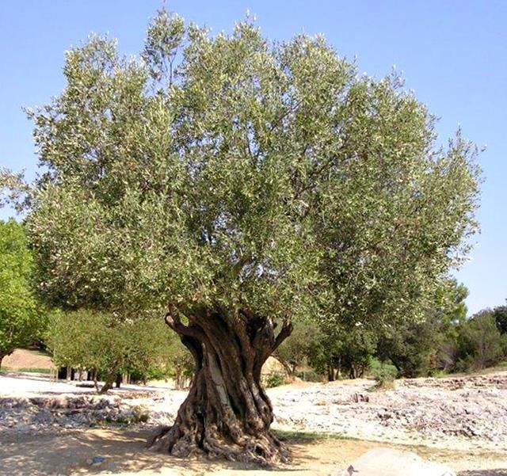
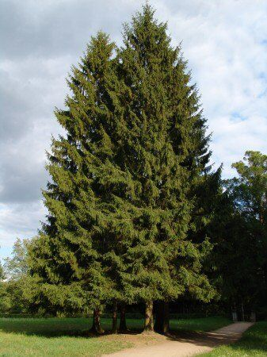
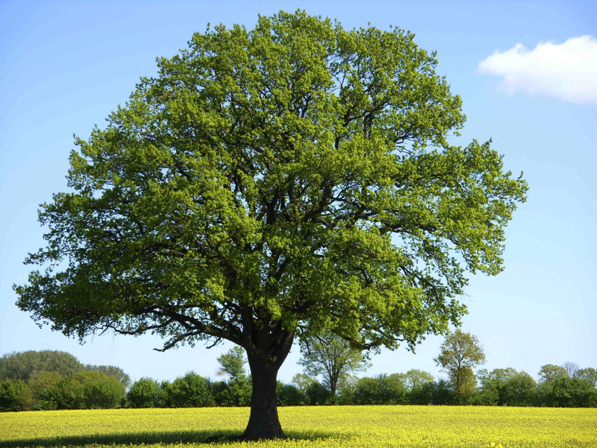

Bu site, ağaçlarla ilgili verileri bir araya getirmek amacıyla oluşturulmuştur.
Treepedia Hakkında
Treepedia, doğanın kalbine dokunan bir proje olup, ağaçların korunması ve çevre bilincinin artırılması amacıyla oluşturulmuştur.
Burada ağaçlarla ilgili farklı bilgiler, türler ve koruma yöntemleri hakkında kaynaklar bulabilirsiniz.
Zeytin Ağacı (Olea europaea)
- Yaşam Süresi: 1000 yıla kadar yaşayabilir.
- Yetiştiği Yer: Akdeniz iklimi; sıcak ve kurak yazlar, ılıman kışlar.
- Meyvesi: Zeytin (yağ ve sofralık olarak kullanılır).
- Özellikleri:
- Yaprakları ince ve gümüşi yeşildir.
- Kuraklığa dayanıklıdır.
- Barışın ve bolluğun simgesidir.
Çam Ağacı (Pinus spp.)
- Yaşam Süresi: Türüne göre 100 ila 1000 yıl.
- Yetiştiği Yer: Dağlık ve serin bölgeler; kumlu, taşlı toprakları sever.
- Yaprakları: İğne şeklinde, her daim yeşil.
- Özellikleri:
- Reçineli gövdesi vardır.
- Odunu yapı ve kâğıt sanayisinde kullanılır.
- Ormanların temel ağaçlarındandır.
Meşe Ağacı (Quercus spp.)
- Yaşam Süresi: 200-1000 yıl.
- Yetiştiği Yer: Ilıman iklimlerde, nemli ve derin topraklarda.
- Meyvesi: Palamut.
- Özellikleri:
- Geniş ve kalın yapraklıdır.
- Kuvvetli kök sistemi vardır.
- Odunu dayanıklıdır; mobilya ve fıçı yapımında kullanılır.